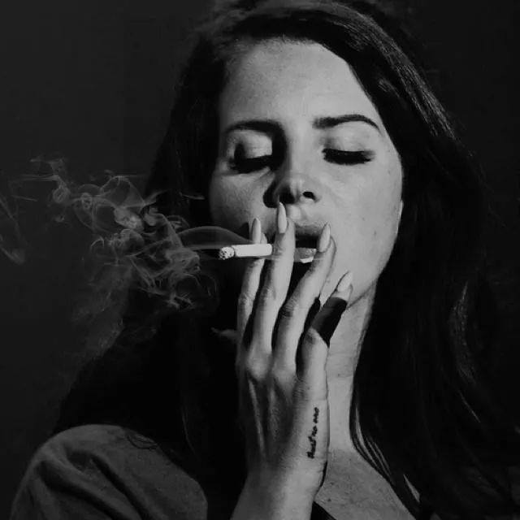
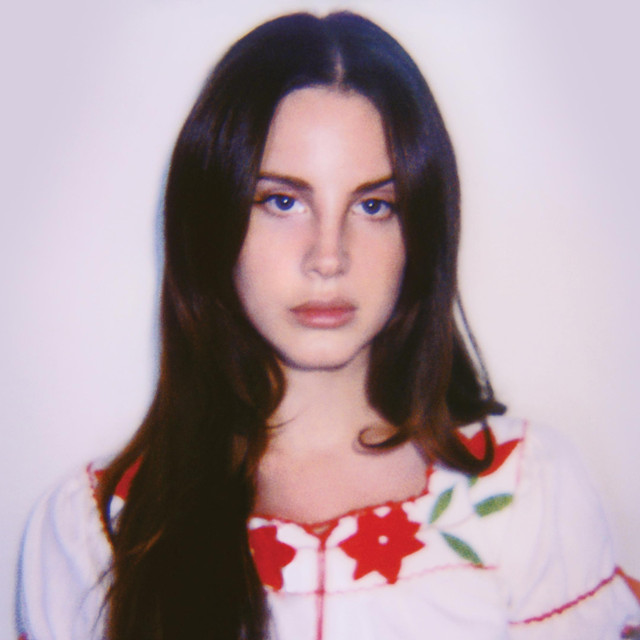
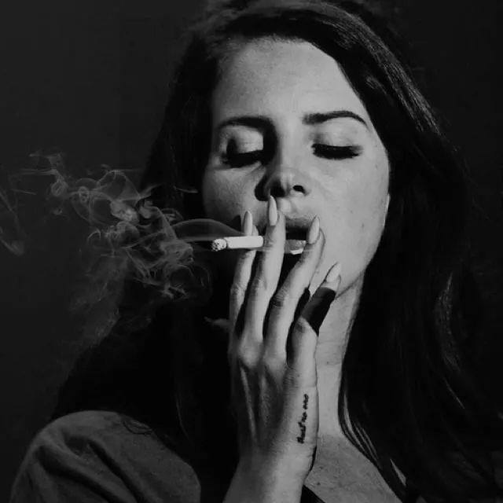
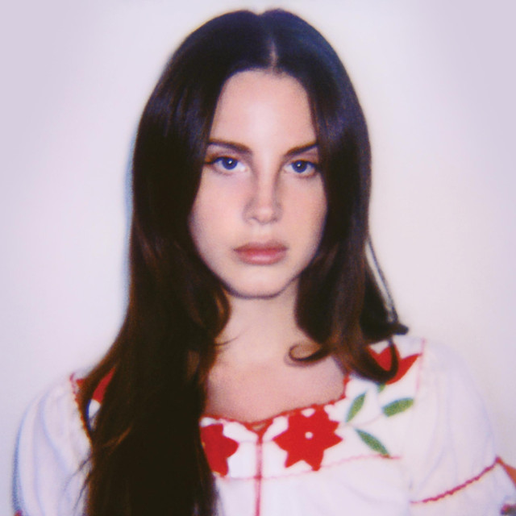
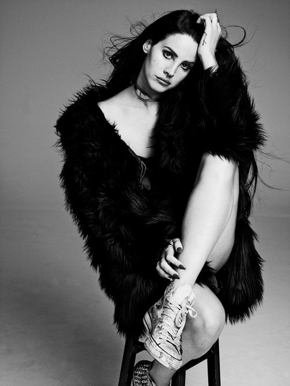
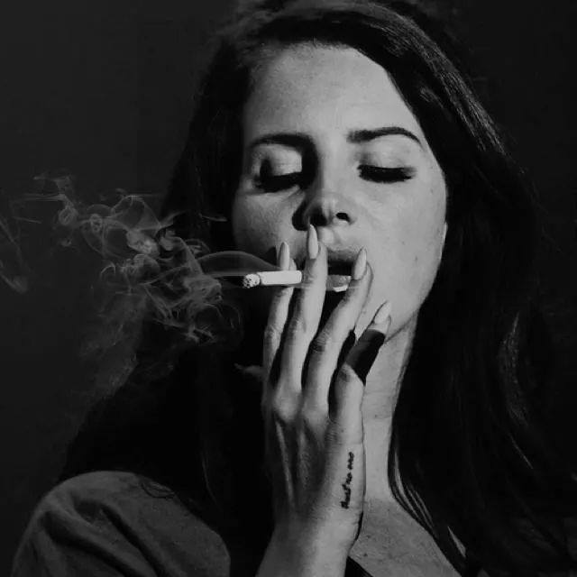
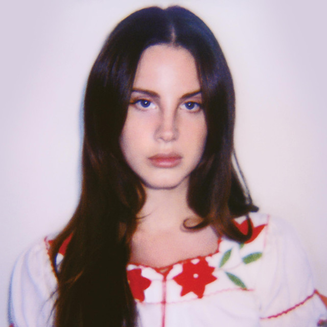

Squilliam Fancyson is Squidward Tentacles' arch-rival whom he met in high school band class. He is a very wealthy, self-serving, unibrow-endowed octopus who has succeeded in everything Squidward has failed in and thus looks down upon him. Squidward is painfully jealous and constantly attempts to show Squilliam he's not a loser, with varying results. Like other octopus characters, Squilliam's character model is nearly identical to Squidward's, but he has a unibrow and wears a fancy maroon robe. He owns a private yacht, a private lake, a private heliport, a private island, and a balloon/casino. He owns a fancy house which made an appearance in "House Fancy." Squilliam is voiced by Dee Bradley Baker.

